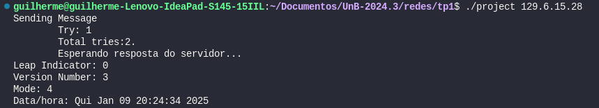

Integrantes do Grupo:
Guilherme Brito Vilas Boas (190108011)
Sistema Utilizado: Linux Ubuntu 22.04
Ambiente de Desenvolvimento: Visual Studio Code
Build
Para a build desse projeto, é necessário rodar o comando make project para que o arquivo executável seja gerado.
Execução do Programa
Para a execução do programa, basta após a build, executar o comando ./project <IP SERVIDOR SNTP>.
exemplo:
./project 129.6.15.28
Introdução
Este trabalho tem como objetivo a criação de um cliente para o protocolo SNTP.
O SNTP (Simple Network Time Protocol) é um protocolo derivado do NTP (Network Time Protocol), especificado pela RFC-1305. Ambos os protocolos são utilizados para manter os relógios dos dispositivos sincronizados.
Componentes
Para a realização deste trabalho, foi necessário o desenvolvimento de componentes adicionais, como, por exemplo um Cliente Genérico UDP.
Cliente Básico UDP
Neste tópico, será apresentada a descrição da pequena biblioteca de um cliente UDP genérico desenvolvida pelo grupo para enviar mensagens via protocolo UDP para um servidor.
A função principal send_message é responsável por enviar uma mensagem via protocolo UDP para o servidor especificado, além de gerenciar a espera pela resposta. Ela pode ser configurada com diferentes parâmetros para ajustar o comportamento do envio e da espera pela resposta, como número de tentativas e tempo de espera.
void *send_message(const char *peer_ip, int peer_port, void *payload, struct send_message_flags flags);
Essa função recebe por parâmetro o ip e porta de envio do pacote UDP (peer_ip e peer_port), o pacote que será enviado (payload) e um parâmetro adicional de algumas flags possíveis para configuração do comportamento da função:
struct send_message_flags {
int retries; # Define o número de tentativas que o cliente deve realizar caso o envio da mensagem ou o recebimento da resposta falhe. O valor padrão é 2 (1 + 1 tentativa), conforme especificado no relatório do Trabalho.
bool wait_for_answer; # Indica se o cliente deve aguardar uma resposta após enviar o pacote UDP. Para o cenário deste trabalho, este valor deve ser configurado como true, uma vez que o cliente SNTP espera receber uma resposta do servidor contendo informações sobre o tempo.
int timeout; # Define o tempo máximo (em segundos) que o cliente deve aguardar pela resposta do servidor antes de abortar a operação. O valor padrão é configurado para 20 segundos, conforme especificado no relatório do Trabalho.
};
Retorno
A função retorna um ponteiro void*, que pode ser utilizado para acessar a resposta do servidor (se wait_for_answer for true). Caso não haja resposta ou o tempo de espera seja excedido, a função pode retornar NULL ou um valor indicativo de falha, dependendo da implementação interna.
Lógica de Funcionamento
1. Configuração do Endereço de Destino
- O endereço IP e a porta do servidor de destino são configurados na estrutura
sockaddr_in. - O IP é convertido de formato string para binário usando a função
inet_aton(). - A porta de destino é configurada com a função
htons()para garantir que o valor seja interpretado corretamente pelo protocolo de rede. - Caso o IP fornecido seja inválido, a função exibe uma mensagem de erro e retorna
NULL.
struct sockaddr_in peer_addr = {.sin_family = AF_INET, .sin_port = htons(peer_port)};
if (inet_aton(peer_ip, &peer_addr.sin_addr) <= 0) {
perror("Invalid IP address.");
return NULL;
}
int udp_socket = socket(AF_INET, SOCK_DGRAM, 0);
2. Criação do Socket UDP
- A função segue tentando criar um socket UDP com a chamada à função
socket(). - Se a criação do socket falhar, uma mensagem de erro é exibida, e a função retorna
NULL.
int udp_socket = socket(AF_INET, SOCK_DGRAM, 0);
if (udp_socket < 0) {
perror("Socket creation failure.");
return NULL;
}
3. Envio da Mensagem
- O código tenta enviar o pacote de dados (payload) para o servidor utilizando a função
sendto(). - Caso o envio falhe, o socket é fechado e a função retorna
NULL.
if (sendto(udp_socket, payload, sizeof(struct ntp_packet), 0, (struct sockaddr *)&peer_addr, sizeof(peer_addr)) < 0) {
perror("Sending message failure.");
close_socket(udp_socket);
return NULL;
}
4. Aguarda Resposta
- Se a flag
wait_for_answerfor configurada comotrue, a função aguarda a resposta do servidor. - A função utiliza a chamada
select()para aguardar por uma resposta dentro do período de tempo configurado na flagtimeout. - A função verifica se o servidor respondeu dentro do tempo limite.
- Caso o tempo expire sem resposta, o código tenta reenviar a mensagem até atingir o número máximo de tentativas configurado.
- Se
select()retornar um erro, o socket é fechado e a função retornaNULL.
int try = 1;
int total_tries = flags.retries + 1;
do {
flags.received_message = false;
printf("Sending Message\n\tTry: %d\n\tTotal tries:%d.\n", try, total_tries);
if (sendto(udp_socket, payload, sizeof(struct ntp_packet), 0, (struct sockaddr *)&peer_addr, sizeof(peer_addr)) < 0) {
perror("Sending message failure.");
close_socket(udp_socket);
return NULL;
}
if (flags.wait_for_answer) {
int ret;
fd_set readfds;
struct timeval timeout;
timeout.tv_sec = flags.timeout;
timeout.tv_usec = 0;
FD_ZERO(&readfds);
FD_SET(udp_socket, &readfds);
printf("\tEsperando resposta do servidor...\n");
ret = select(udp_socket + 1, &readfds, NULL, NULL, &timeout);
if (ret < 0) {
perror("Error during select.");
close_socket(udp_socket);
return NULL;
} else if (ret == 0) {
printf("\tOtempo expirou e não houve reposta do servidor.\n");
try++;
} else {
flags.received_message = true;
}
}
} while (try <= total_tries && !flags.received_message);
5. Recebimento da Resposta
- Quando uma resposta do servidor é recebida, o código a processa com a função
recvfrom(). - O tamanho dos dados recebidos é comparado com o tamanho esperado de um pacote SNTP.
- Se a quantidade de dados recebidos for menor do que o esperado, um erro é gerado e o socket é fechado.
if (flags.received_message) {
socklen_t addr_len = sizeof(peer_addr);
ssize_t received_bytes = recvfrom(udp_socket, payload, sizeof(struct ntp_packet), 0, (struct sockaddr *)&peer_addr, &addr_len);
if (received_bytes < 0) {
perror("Error receiving message.");
close_socket(udp_socket);
return NULL;
} else if (received_bytes < (ssize_t)sizeof(struct ntp_packet)) {
fprintf(stderr, "Incomplete SNTP packet received (%zd bytes).\n", received_bytes);
close_socket(udp_socket);
return NULL;
}
}
6. Fechamento do Socket
- Após o envio ou recebimento da mensagem, o socket é fechado com a função
close_socket(). - A função
close_socket()garante que o socket seja fechado corretamente, liberando os recursos do sistema.
int close_socket(int socket)
{
if (close(socket) < 0)
{
perror("Error closing socket.");
return EXIT_FAILURE;
}
return EXIT_SUCCESS;
}
Exemplo de Uso
struct send_message_flags flags = {.wait_for_answer = true, .timeout = 20, .retries = 1};
struct ntp_packet ntp_packet;
memset(&ntp_packet, 0, sizeof(ntp_packet));
ntp_packet.li_vn_mode = 0x1B;
struct ntp_packet *response = (struct ntp_packet *)send_message(server_ip, 123, (void *)&ntp_packet, flags);